Análisis de la dirección profesional de Nexo Empresarial sobre los cambios fiscales, contables y legales que afectan a las empresas hondureñas — sin tecnicismos vacíos, con lo que realmente hay que hacer al respecto.
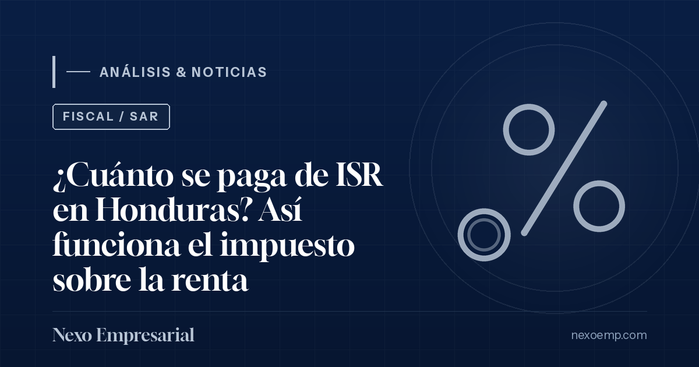
El ISR de una persona natural no se paga sobre todo lo que gana: hay un tramo exento y una escala del 15 %, 20 % y 25 %. Le mostramos la tabla 2026 del SAR, dos ejemplos de cálculo y cuándo se declara.
Leer análisis →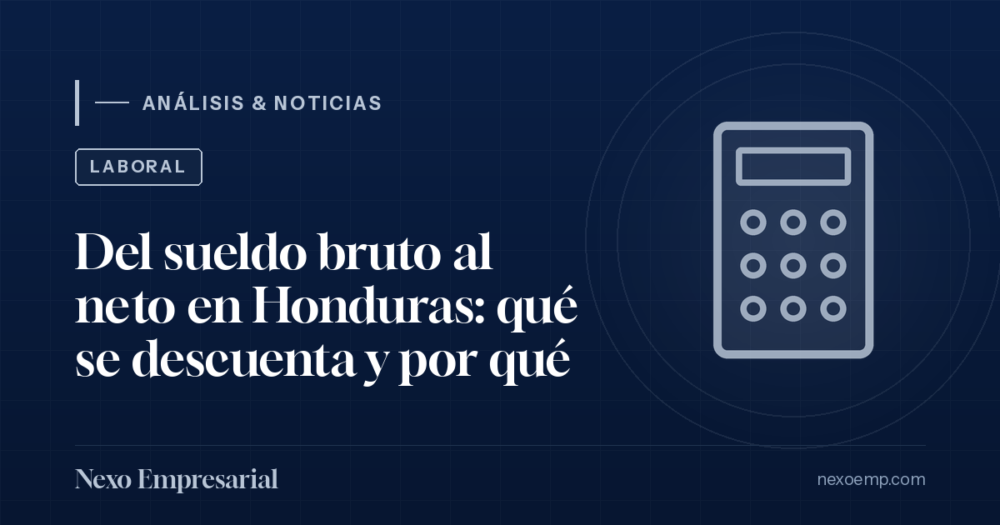
IHSS, RAP y retención del ISR explican casi toda la diferencia entre lo que se pactó y lo que llega a la cuenta. Le mostramos el orden del cálculo y qué paga el patrono aparte.
Leer análisis →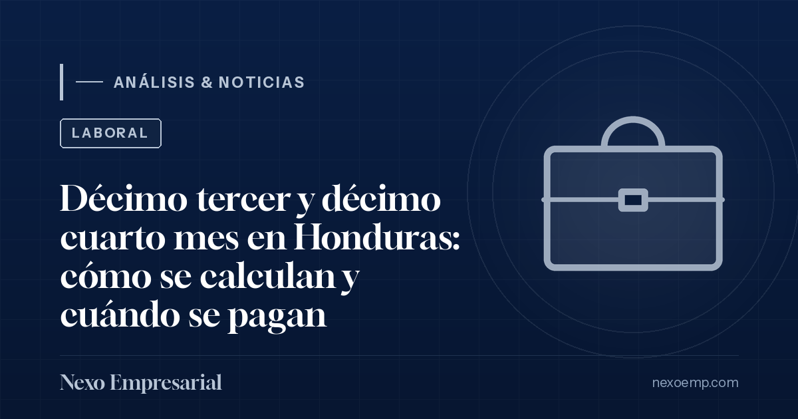
Son dos pagos distintos, con fechas distintas, y ambos se prorratean cuando el trabajador no completó el año. La confusión entre ellos es una de las causas más frecuentes de reclamo.
Leer análisis →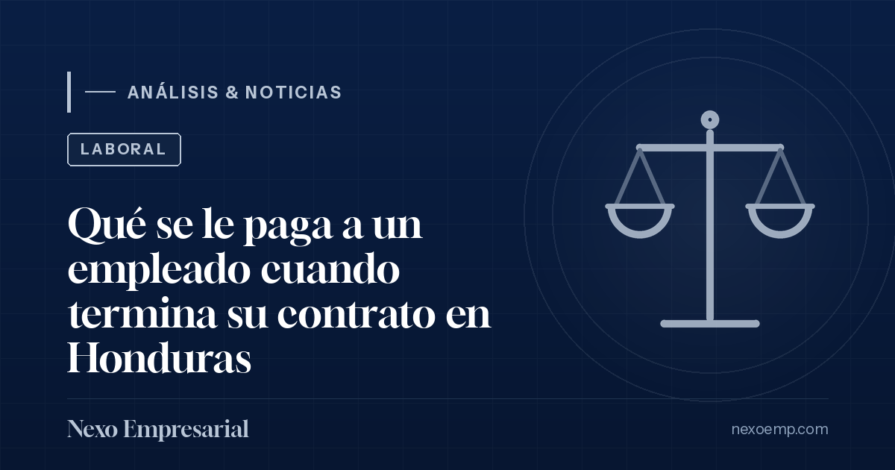
Hay conceptos que se pagan siempre y otros que dependen de por qué terminó la relación. Confundirlos es el origen de la mayoría de las demandas laborales contra las MIPYME.
Leer análisis →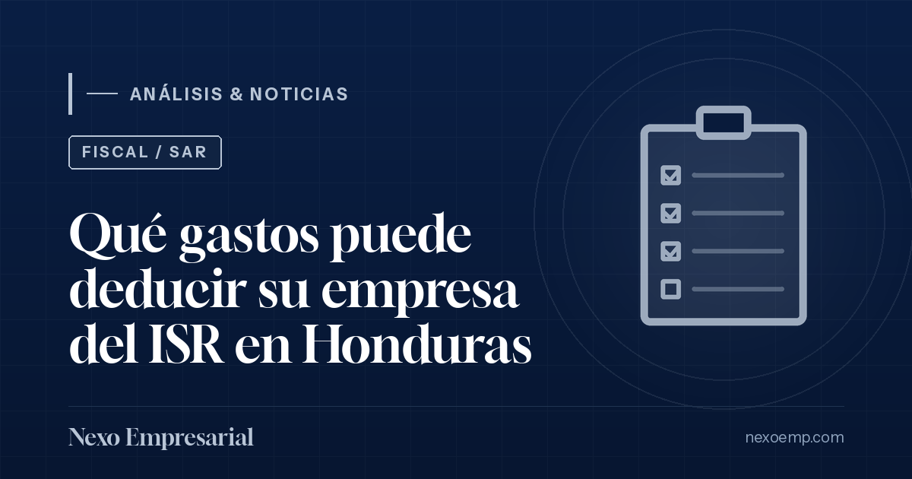
No todo lo que la empresa paga reduce el impuesto. Un gasto es deducible cuando es necesario para generar la renta, está documentado y está registrado; si falla cualquiera de los tres, se cae.
Leer análisis →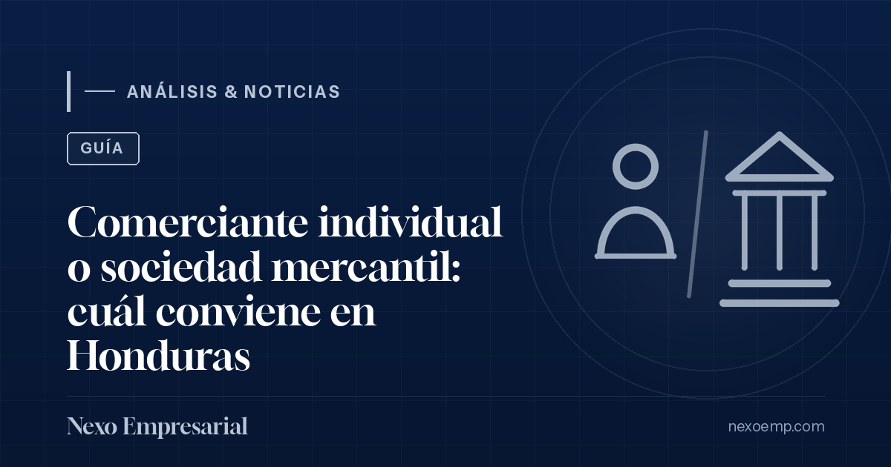
Guía práctica para dueños de MIPYME en Honduras: diferencias entre comerciante individual y sociedad mercantil, riesgo patrimonial, impuestos y cuándo dar el salto.
Leer análisis →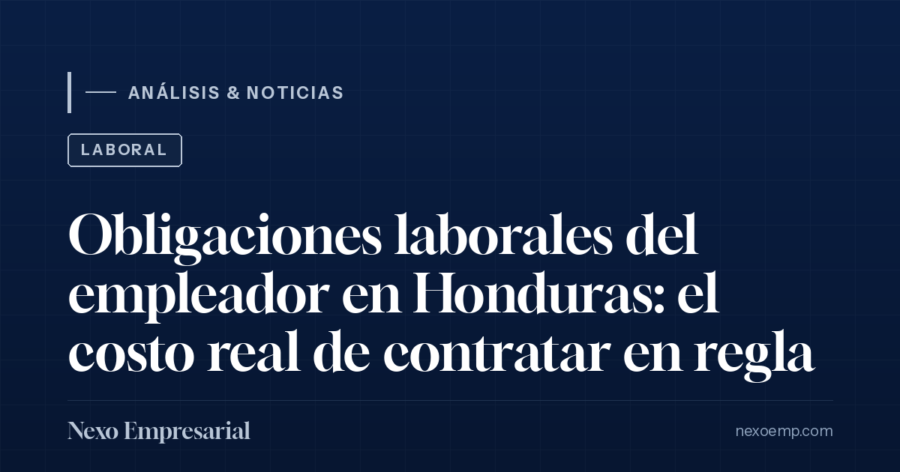
IHSS, RAP, INFOP, retención del ISR y prestaciones básicas: una guía clara para que tu MIPYME contrate en regla y calcule el costo verdadero de cada empleado.
Leer análisis →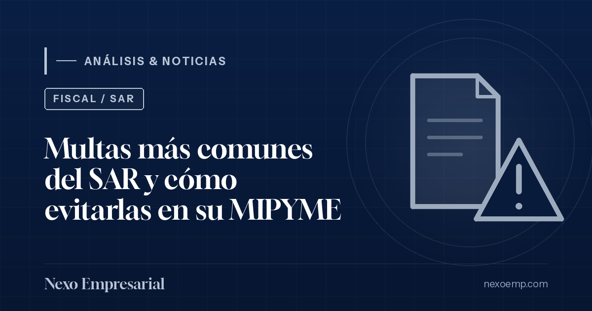
Las sanciones del SAR rara vez llegan por sorpresa: casi siempre nacen de descuidos evitables. Le explicamos las cuatro más frecuentes y cómo blindar su negocio.
Leer análisis →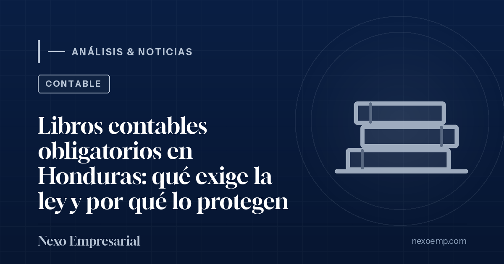
Los libros y registros contables no son un trámite: son la memoria legal de tu empresa. Te explicamos para qué sirven, qué pide la ley a grandes rasgos y cómo llevarlos bien blinda al dueño.
Leer análisis →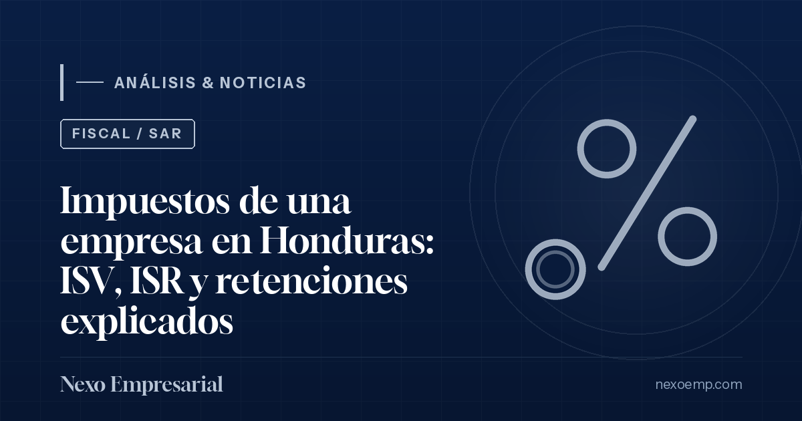
El mapa básico de la carga tributaria de una empresa en Honduras: ISV, ISR, aportación solidaria, impuesto al activo neto, pagos a cuenta y retenciones — en lenguaje claro.
Leer análisis →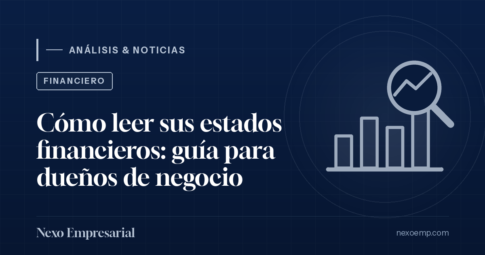
Aprende a interpretar el balance general, el estado de resultados y el flujo de efectivo sin tecnicismos, y descubre qué mirar en cada uno para tomar mejores decisiones.
Leer análisis →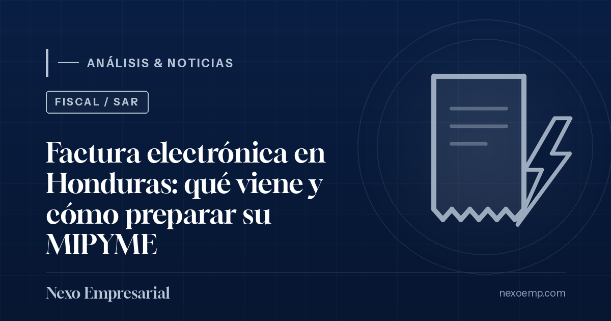
El régimen de facturación en Honduras avanza hacia lo electrónico. Le explicamos qué significa para su MIPYME y cómo ordenar su facturación desde hoy.
Leer análisis →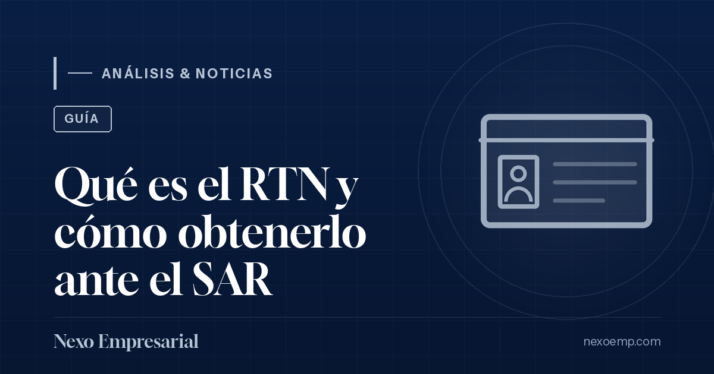
El primer documento fiscal que necesita cualquier persona o empresa para operar formalmente en Honduras. Qué es, para qué sirve y cómo se obtiene.
Leer análisis →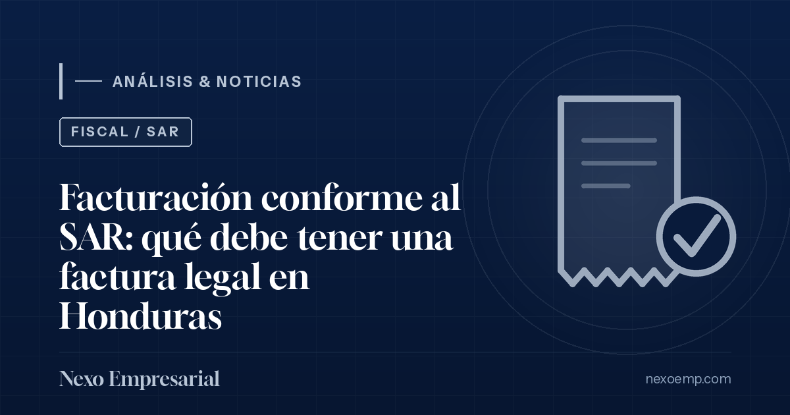
CAI, RTN, rango de numeración y fecha límite: los elementos que hacen válida una factura — y los errores que más rápido generan multas del SAR.
Leer análisis →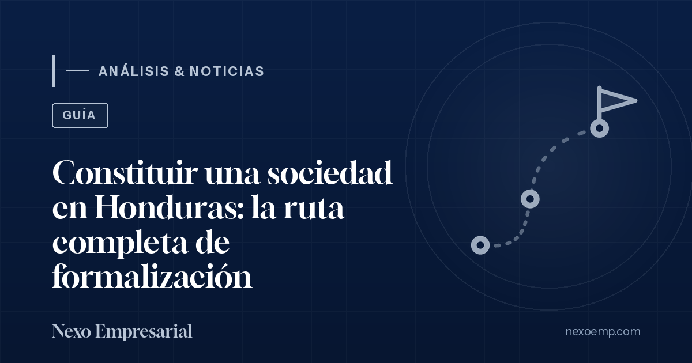
Del pacto social a la operación legal: el orden correcto de inscripciones ante el Instituto de la Propiedad, el SAR, IHSS, RAP, INFOP y la municipalidad — y los errores que más cuestan después.
Leer análisis →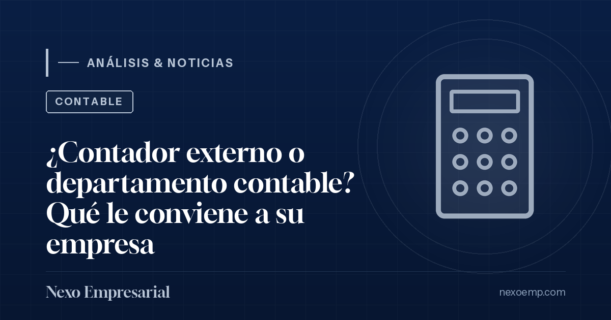
Costos, control y escala: cuándo conviene tercerizar la contabilidad, cuándo montar un equipo interno y por qué el modelo híbrido suele ganar.
Leer análisis →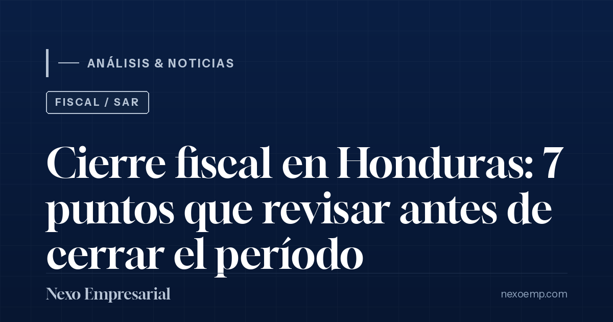
El cierre no empieza en diciembre. Una revisión ordenada de conciliaciones, gastos no deducibles, retenciones e inventarios evita ajustes, multas y sorpresas frente al SAR.
Leer análisis →¿Busca un contador que lo atienda en persona? Tenemos oficina en San Pedro Sula y visitamos Tela, Santa Rosa de Copán, Santa Bárbara, Siguatepeque y Comayagua. Vea dónde atendemos →